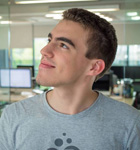
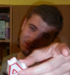
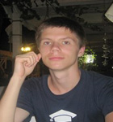
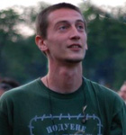

CEO/ Managing Director

Наков
Наков е Най-Великият. Да се Свети Името Му.
Той е Началото и Краят. Той е и Пътя и Истината и Живота.
И който Го следва винаги ще му се компилира кода! Той е толкова Велик, че е учил Чък Норис да програмира!
Director Live Broadcast

Ангел
"Моите Две Десни Ръце" - както го нарича шефа му (Наков е толкова велик, че лява ръка няма). Ангел е човекът с машинно масло в едната ръка и чук в другата. И той непрекъснато смазва и оправя машината на СофтУни.
Creative Manager

Ники Банкин
Ники Банкин е такъв талантлив дизайнер, че когато Бог(Наков) създавал Земята, го извикал да Му помогне. Ники с готовност приел, но проекта по който работил най-усърдно, били женските форми!
Main Assisstant
Alex
Алекс е толкова красива, че е най-красивата. Всички млади кандидат-програмистки тайно й завиждат, защото и те искат да бъдат в предаването на Наков.
Recreational Manager

Royal
RoYal е най-добрият програмист сред играчите на билярд. Той също е единственият човек, който може да създаде задача за изпит със затворени очи. Затова сред някои от студентите е известен и като Човека-Дракон:
Справка: Изпита по Java Fundamentals 04.10.2015
Technical Manager

Наско
Наско има коефициент на интелигентност 221! С едно повече от най-умния човек на Земята, което си е време-пространствен парадокс. Той спокойно би могъл да отиде в Церн и да открие няколко нови закона от квантовата физика, с което ще промени съдбата на хората, но цялата идея с предаването на Наков му е много забавна и затова той седи наоколо да види какво ще стане.
Junior Assistant

Трифон
Трифон е най-новият член на екипа на СофтУни. Той наскоро беше посрещнат от Наков с думите:
"Welcome to the Force! But you are not a Jedi, yet!"